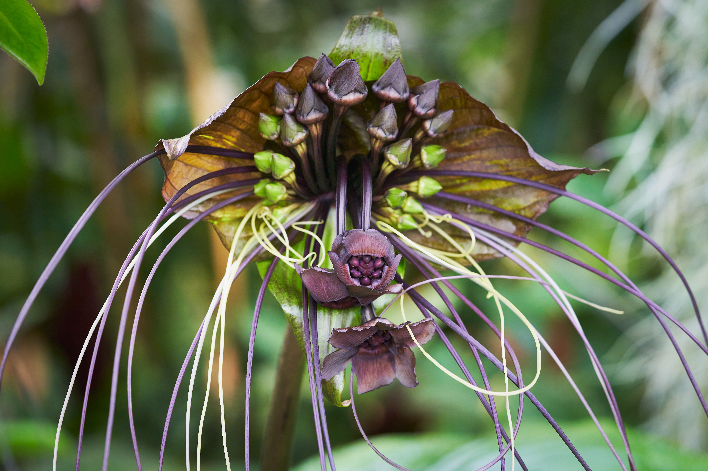

TaccaChantrieri

Tacca chantrieri is a species of flowering plant in the yam family Dioscoreaceae.[2] It is commonly called the black bat flower.
It was first described in 1901 by Édouard André
Tacca chantrieri is an unusual plant in that it has black flowers. These flowers are somewhat bat-shaped, are up to 12 inches across, and have long 'whiskers' that can grow up to 28 inches. There are ten species in the genus Tacca.[4]:517 One of these, T. integrifolia, is commonly called the "white bat plant." T. integrifolia is similar to T. chantrieri, but has white bracts which are veined purple. T. integrifolia is larger than T. chantrieri, reaching up to four feet in height (almost twice the size of T. chantrieri at a height of 24"-36").[5]
Tacca species have been thought to be pollinated by flies seeking decaying organic material.[6][7] This hypothesis was tested for T. chantrieri, but the populations studied were found to be essentially self-pollinating.